ホームズは黙り込んだまま、その細く長い身体を猫背にして、何時間も化学実験室に向かっていた。何かひどくいやな臭いのするものを生成しているのだ――深々とうつむくその様が、私には、ひょろ長い
「だからワトソン――」とホームズが突然口を開く。「君は、南アフリカの証券への投資を思いとどまった。」
私は驚きのあまり身を震わせた。このホームズの不思議な力に慣れているとはいえ、どうして私の胸のうちの考えに潜り込めたのか、皆目見当がつかなかった。
「いったい、どうしてそのことを？」と、私は聞き返す。
ホームズは椅子をくるりと回し、手に試験管を持ったまま、その深くくぼんだ瞳を面白そうに輝かせるのであった。
「さあワトソン、ぐうの音も出まい」
「まったくだ。」
「では、この件について、君に証文を書いてもらわねば。」
「なぜかね？」
「五分後には、君はきっと『ひどく簡単な話だ』などと言うからだ。」
「いやいや、そんなことは言わんよ。」
「その、ワトソンくん。」ホームズは試験管を立てかけて、教授が講堂で学生たちに講義でもするていで話し出した。「それぞれ前後をつなげて、ひとつひとつ単純に考えれば、筋道だった推理も、決してそう難しいことではない。たとえば、そのような推理をしておいて、その筋の真ん中を少し向こうへやって、聞き手にその始まりと結論だけを見せようものなら、人をあっと言わせることができるわけだが、まあ、ほんのこけおどしだ。さよう、難しいことではない。君の左の人差し指と親指の間のすり切れた皮膚を考えれば、君が金鉱の株の購入を思いとどまったと確信できる。」
「どういう脈略かね。」
「そう思って当然。だが、僕にはその深い脈略を手短に説明できる。そこには、ごく単純な連鎖のあいだの、失われた輪がある。一、君は左の人差し指と親指の間にチョークをつけて、昨晩クラブから帰ってきた。二、君はビリヤードの際、キューがすべらないよう、いつもその部分にチョークをつける。三、君のビリヤードの相手は、サーストンだけ。四、君は四週間前、サーストンから、ある南アフリカの株式について一ヶ月期限のオプションを持っているが、できれば君と共同購入したいと持ちかけられた、と言った。五、君の小切手帳は、僕の錠の下りた引き出しの中だが、君はその鍵を欲しいと言っていない。六、かくして君は、投資を思いとどまった。」
「まったく、ひどく簡単な話じゃないか！」と私は叫んだ。
「無論ね！」と、ホームズが少し機嫌を悪くする。「どんな問題も、いったん君に解き明かせば、みな子どもだましという。だが、ここにいまだ解かれぬものがある。これをどう思うね、ワトソンくん？」ホームズは一枚の紙を机の上に放り出して、また化学の分析の方に向き直った。
私はそれを見て驚いた。紙の上には、でたらめな象形文字のようなものが書かれていたのだ。
「おい、ホームズ、子どもの落書きかね！」と私は大声で言った。
「ほう、そう考えるかね。」
「では何だと言うんだ？」
「まさにそれを、ノーフォーク州リドリング・ソープ荘園のヒルトン・キュービット氏が、しきりに知りたがっている。この謎かけが今朝の第一便で来て、本人はその次の列車で来ることになっている。ベルの音だ、ワトソン。その人だとしても、僕は驚かぬよ。」
重々しい足取りが階段に聞こえたかと思ううちに、一人の紳士が入ってきた。背が高く、血色も良い、ひげも綺麗に剃った紳士で、その澄んだ目、健康なほおは、ベイカー街の霧の中からはるか離れたところで暮らす人を思わせた。その紳士が部屋の中に入ってきたとき、どこか、きつくさわやかですがしがしい、東海岸独特の香りが漂ってくるようだった。紳士が我々ふたりと握手を交わし、さて腰掛けようとしたとき、不思議な記号の書かれた紙に目をとめた。私が見たあと、机の上に置きっぱなしにしてあったのだ。
「ああホームズさん、これをどうお考えですか？」と紳士は声を振り絞る。「あなたは奇妙奇天烈なことがたいへんお好きだそうですが、きっとこれより奇妙なものはご覧になったことがないでしょう。前もってお送りすれば、あらかじめお考えになられるだろうと思ったのです。」
「確かに、いくぶん妙ではあります。」とホームズが言う。「初見では、子どものいたずら描きのようにも見える。でたらめな人形が大勢で、書かれた紙の上を並んで踊っているようでもある。なにゆえ、かくも異形なオブジェを、重くお考えになるのですか？」
「それは私じゃないんです、ホームズさん。その、私の妻が。これを見て、妻が卒倒しまして。あれは何も言いませんが、目がおびえているのです。ですから、私は、これを最後まで調べたいと思ったのです。」
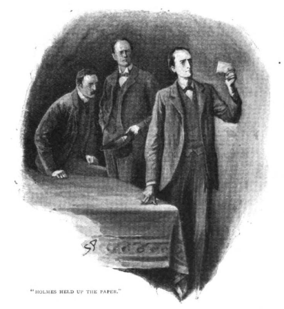
ホームズは紙切れを取り上げて、日の光に透かしてみせた。それはメモ帳から破り取ったもので、鉛筆で次のような絵が描かれていた。
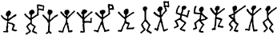
ホームズはしばらくのあいだ、それを調べていたが、やがて丁寧に折りたたみ、自分の手帳のあいだに挟んだ。「これは実に興味深い、まれな事件となりましょう。」ホームズが言った。「ヒルトン・キュービットさん、お手紙のうちで、二三、具体的なことを書いておいででしたが、この友人、ワトソン博士のためにもう一度お話いただけると幸いです。」
「どうも私は話し下手でして、」その依頼人は緊張のため、その硬く大きな手をもじもじさせながら話を始めた。「わかりにくいところは、その都度お訊ねください。昨年、私が結婚したところから始めましょう――いえ、まずその前にお耳に入れておきたいのですが、私の家は、決して裕福ではありませんが、ここ約五世紀の間は今のリドリング・ソープに住んでいて、ノーフォークのあたりでは第一の旧家だということです。昨年の記念祭の折、私はロンドンへ来て、ラッセル・スクエアの宿泊所に滞在しました。それは私の教区で牧師をやっているパーカーさんが滞在していた関係からです。そうするとそこに、アメリカの若いご婦人がいて――パトリックという名前で――エルシィ・パトリックです。いろいろあって私どもは知り合い、帰らねばならぬころには、もう、これでもかというくらいに、恋に落ちておりました。それで私どもは早速、結婚の手続きをすませ、夫婦としてノーフォークに帰りました。おかしいと思われるでしょう、ホームズさん。こんな旧家の人間が、こんなふうにして、相手の過去も家族も知らないままに結婚してしまうなんて……しかし、妻をご覧になり、人となりを知ってくだされば、ご理解いただけるかと思います。
とにかくあれは真面目です、エルシィは。私が訊ねさえすれば、包み隠さず言ってくれたと思っています。『わたくしには、とても厭な思い出がございます。』と妻は言うのです。『どうにかして忘れたいと思っております。過去のことは、できれば口にしたくもありません。とても、つらいことですから。ヒルトンさん、あなたが私を求めてくださるなら、あなたはひとりの女を、人として恥ずべきことなど何ひとつない女を得ることになりましょう。その代わり、あなたは、わたくしの言葉を信じて、妻になるより前のことは口を閉ざしても構わない、そうおっしゃってくださらねばなりません。もしそれでこのお約束が無理だとおっしゃるなら、どうぞわたくしをこのまま残してノーフォークへお帰りください。』これは私どもの結婚の前日、妻が私に言った言葉です。それで私は妻の言葉をそのまま受け入れて、その後もこの約束をかたく守ってきました。
そしてその後私どもはこの一年のあいだ、結婚生活を続けて参りましたが、私どもは実に幸福でした。しかし一ヶ月ほど前、六月の末に、私ははじめてわざわいの兆しを見たのです。その頃、妻はアメリカからの手紙を受け取りました。アメリカの消印があったんです。そのとき、妻の顔は気絶しそうなほどに真っ青で、手紙を読むと、それをそのまま火の中に投げ込んでしまいました。その後、妻は別段そのことについて何も言いませんでしたし、私もまた約束に従って、そのことについては一言も触れませんでした。しかし妻は、それ以来ずっと、何か不安げで――何ごとかにびくびくしているようでした。どうか頼ってくれ。ここに最高の伴侶がいるじゃないか……でも、妻が言い出さなくては、こちらから切り出せない。わかってください、妻は誠実な女性なのです、ホームズさん、もし過去に何かいざこざがあるとしても、妻の落ち度ではないはずです。私はノーフォークの田舎者にすぎませんが、それでも英国随一の旧家だと、妻も存じておりますし、結婚前から認めておりました。まさかその妻が、私の家名を汚すなどありえません。それは絶対です。
さていよいよ話が奇怪な部分に進むのですが、一週間ほど前――そうです、先週の火曜日です――私はガラス窓の上に、この紙にあるようなでたらめな、小さな踊る人形が描かれているのを発見しました。それはチョークで殴り描きされていて、私は馬番の少年がやったのだと思ったのですが、その坊主は、全く知らないと言い張るのです。とにかく夜に描かれたものでした。私は洗い落としてから、このことを妻に話しました。ところが驚いたことに、妻はそんなものをまじめに取り合って、もしまた描かれたらぜひ見たいと言うのです。それから一週間は描かれなかったのですが、ちょうど昨日の朝、また私は、庭の日時計の上に、この紙切れが置かれているのを見つけました。私がそれをエルシィに見せますと、卒倒して倒れてしまったのです。それ以来、妻はぼうっとしてしまって、いつも何かにおびえた目をするのです。それから私はホームズさんに手紙を書いて、この紙切れをお送りした次第です。こんなもの、まさか警察に訴えても笑いものにされて取り合ってくれないでしょうし、あなたでしたらどうすべきか教えてくださると思ったのです。私は決して裕福ではありませんが、何かが妻をおびえさせているのだとしたら、全財産をかけても妻も守ってやりたいと思うのです。」
善良な男だ――古き良きイギリス人――素朴で実直、そして温和、目は大きく熱意のこもった青色、顔は大きく端正。ホームズは集中してこの話を聞いていたが、そのあと、しばし黙って思案に沈んでいた。
「ですが、キュービットさん。」ようやく口を開く。「最善の策は、直接奥さまにお訊ねになり、秘密を打ち明けてもらうことではないでしょうか。」
ヒルトン・キュービットはその大きな頭を振った。
「約束は約束です、ホームズさん。もしエルシィが話していいと思うくらいなら、向こうから話してくれます。また話したくないことなら、強要したくありません。それでも、私には私でできることがあるはず――なのです。」
「ならば全力でご相談にあずかります。ではまず、近所に不審な人物を見たという話は？」
「ありません。」
「たいへん閑静なところかと存じますが、新顔などが現れたという噂は？」
「ごく近所で、ありました。しかし近場に海水浴場がありますので、よく地主どもが人を泊めるのです。」
「この絵文字は、確かに何か意味がある。もしまったくのでたらめとすればお手上げですが、ここに規則があるなら、必ず暴くことができます。ですがこれだけではなにぶん短くて、いかんともしがたく、またお聞かせいただいた事柄も、まだ漠として何とも調べようがありません。おすすめしたいのは、一度ノーフォークにお帰りになって、注意深く監視をし、再度この踊る人形が現れた際には、それを正確に写し取ることです。先の窓ガラスに描かれたものの写しを見ることかなわないとは、残念至極です。辺りに不審者がないかどうかも、じゅうぶん注意願います。新たな証拠が手に入りましたら、またおいでください。これがあなたに対しての、僕の最善の答えです。それではヒルトン・キュービットさん、もし新展開でもありましたら、そのときはいつでも出立して、ノーフォークのお宅でお目にかかりましょう。」
この会見ののち、シャーロック・ホームズは深く考え込んでしまった。そして二三日の間、手帳から例の記号の描かれた紙切れを取り出しては、じっと熱心に見つめるのであった。二週間ばかりのあいだ、ホームズはそのことをおくびにも出さなかったが、ある日の午後、私が外出しようとするところを呼び止めたのであった。
「ここにいた方が賢明だ、ワトソン。」
「どうしてかね？」
「今朝、ヒルトン・キュービットから電報が来た。ほら、あのキュービットだ、踊る人形の。彼は一時二十分にリバプール街に着くはずで、まもなくここに来る。電報から察するに、何か大事が起きたらしい。」
やがて二輪馬車が全速力で、駅から依頼人のノーフォークの紳士を乗せてやってきた。憔悴した様子で、目は疲れ、額には皺を寄せている。
「息が詰まりそうな事態で、ホームズさん。」依頼人は半病人よろしく、肘掛椅子にもたれかかった。「落ち着きません。得体の知れない人物がどこか近くに潜んでいて、何かをたくらみ、さらに妻がじわじわと殺されていくと考えるだけで、もう、身体がもちません。そんな状況下で、妻は弱りつつあるのです。まさに私の目の前で。」
「奥さまはまだ何も？」
「ええ、ホームズさん、言いません。何か言いたげにはするんですが、やはり決心がつかないのか。助けようともしたんです。でも私が不器用なもんですから、余計こわがらせるだけで。妻が、私の家系のこと、地域における名声、また汚れなき名誉などに言い及ぶこともあって、いよいよ本題に入るのだと思ううちに、話がよそに逸れてしまって。」
「何かご自身でお気づきになったことは？」
「たくさんあります、ホームズさん。何枚か新しい踊る人形を、ぜひご覧ください。それに、人影を見たんです。」
「それは、この記号を描いた張本人ですか？」
「ええ。その現場を見たのです。とにかく、一から順番に話しますね。私がこの前お訪ねして帰って、その翌朝にまた新しい踊る人形の一群を見たのです。それは、物置の黒い扉の上にチョークで描かれていました。そこから芝生を挟んだ向かいの窓から、まっすぐ見えるのです。正確に写し取りました、これです。」依頼人は一枚の紙を卓上に広げた。これがその絵の写しである。
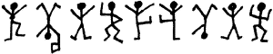
「素晴らしい！」とホームズは言った。「素晴らしい！ どうぞ次を。」「写し取ったあと、その絵を消してしまったのですが、その次の次の朝、また別のものが描かれてありました。この写しになります。」
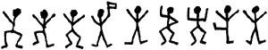
ホームズは手をこすり合わせ、ほくそ笑んだ。「データが次々と集まっています。」
「それから三日経って、紙の上になぐり描かれた一枚の伝言が、日時計の上にある小石に立てかけてありました。これです。ご覧の通り、さきほどのとまったく同じです。それでこのあと、私はひとつ待ち伏せてやろうと思い立ちまして、リヴォルヴァを用意して書斎から芝生や庭を見張りました。午前二時頃、私は窓際に腰掛けていて、外は月明かり以外まったく光がありません。そのとき、ふと背後に人の気配を感じました。
『どうしてもお気になさるのでしたら、ヒルトン、いっそ旅に出ましょう――ふたりで。そうすれば、わずらわしいことからも逃れられますから。』
私は言いました。『なに、ほんのいたずらのために自分の家から逃げたとあっては、まったく世間の笑いものではないか。』
『とにかく寝室に戻りましょう。』と妻が言います。『色々考えるのは、朝でもよろしいでしょう？』
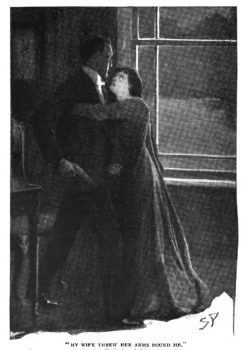
そのとき、妻の顔にさっと月の光が差して、いっそう青白く見えました。妻の手が私の肩をぐっとつかんだとき、物置小屋の陰で、何か動いているのに目がとまりました。何かさっと動く黒い影が、角のあたりをはい回って、戸口の前にうずくまったのです。私はやにわに拳銃を持って飛び出そうとすると、妻は両腕でしっかりと私を抱きとめて、ふるえるような力で押さえるのです。私は妻を振り放そうとしましたが、妻も必死で、やっと振り払って物置へ行ったときには、もう姿がありませんでした。しかし、確かに何かのいた形跡があって、扉の上には、例の踊る人形があったのです。前二回と同じ絵で、さきほどの紙に写した通りです。それから周囲をくまなく探しましたが、何の痕跡もありません。しかしまだ驚くことがありまして、そやつはその後も現れたらしく、翌朝になって、私が例の扉を見ると、昨夜見たものの下にさらにいくつか描かれていたのです。」
「今までのものと別のものですか？」
「ええ、とても短いものですが写してきました、これです。」
依頼人はまた一枚の紙を取り出した。新しい踊りは、次の通りだ。
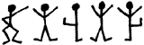
「教えてください、」とホームズが言う――目を見れば、その興奮が見て取れる――「最初のものにただ付け足されていたのか、それとも別のものとして描かれたように見えましたか？」「前のとは、別の板に描かれていました。」
「素晴らしい！ これは何より大切な証拠となりましょう。欲しいものは揃いました。さて、ヒルトン・キュービットさん、その興味深い話をお続けください。」
「もうこの先はないのですが、ホームズさん、ただ、私はその日の晩に妻を叱りまして、私が曲者をつかまえようと出て行くのを引き留めたんですからね。そうすると妻は、私が怪我をしてはいけないからと言い訳するのです。その瞬間、心によぎったんです。妻が案じているのは私でなく、向こうの怪我なのではないかと。つまり、妻は相手が何者かを知っていて、その変な暗号もわかっている。しかし、妻の声の調子なんですよ、ホームズさん、目の色も、どうも嘘をついているとは思えないんです。それで私は、やはり本当に妻が心配したのは、私の身であったのだと考えます。これでもう話は終わりましたが、さてどうすればいいのか、ご助言いただきたいです――私の考えとしては、小姓どもを五、六人茂みに潜ませて、出てきた曲者をしたたか打ちのめせば、以後私どもに近寄ることもないかと存じますが。」
「そんな単純な手で収まりはつきますまい。」とホームズは言う。「ロンドンにはどの程度ご滞在で？」
「今日中には帰宅を。妻を一晩中ひとりにしておくなんて、とんでもない。おびえきって、必ず帰ってきてくれと申すのです。」
「それが正しいかと。ご逗留なら、一両日中にはご同行しようかと思いましたが――では、この紙はあずからせてください。近いうちにお訪ねして、この事件に多少の光明を投げかけることができるかと思います。」
シャーロック・ホームズは、この依頼人が立ち去るまでその職業的な冷静を保っていたが、ホームズを熟知する私には、ホームズの内なる興奮が見て取るようにわかる。ヒルトン・キュービットの広い背中が扉の向こうに消えると、すぐさまホームズは机に走り寄り、例の踊る人形の紙を自分の前に並べて、込み入った計算にじっと取り組むのであった。
二時間ばかり、何枚も数字と文字を書くホームズの姿を、私はながめていた。その仕事に没頭するあまり、私の存在などどこへやらという風であった。時には順調で口笛を吹いたり口ずさんだり、また時には難渋してじっと座り込み、眉をひそめ目をうつろにさせることもあった。やがて最後には椅子から飛び上がり喜びの声を上げ、手をこすり合わせながら部屋中を歩き回る。それからホームズは海外宛の長い電報を書く。「これの返事が思った通りなら、君はまたひとつ愛くるしい事件を君の記録に加えられるよ、ワトソン。」と言う。「明日にはふたりでノーフォークへ行き、あの依頼人が思い悩む謎に対して、はっきりしたことが告げられるものと思う。」
正直、私は心躍る思いだった。しかしわかっている、ホームズはいつも自分の頃合と流儀で種明かしをしたい人間なのだ。だから、解き明かすのにちょうどいい時がくるまで待つことにした。
だが返信はなかなか来なかった。もどかしくも二日が過ぎ、ホームズは呼び鈴にずっと耳を傾けていた。二日目の夕べに、ヒルトン・キュービットから手紙が一通届いた。それによれば、その後の身辺は静穏だが、その日の朝、また日時計の上に長い書き込みがあったからと、その写しが同封されていた。この通りだ。
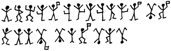
ホームズは数分のあいだ、この奇怪な帯状の絵に見入っていたが、突然声を上げて立ち上がった。驚きとおののきが入り交じり、顔が憔悴している。「様子を見すぎたか。」とホームズは言った。「今夜の北ウォールシャム行きの汽車は？」
私は時刻表を繰ってみた。最終電車が出たばかりだ。
「では朝食を早めにとって、朝一の汽車に乗らねば。」とホームズが言う。「可及的速やかな行動だ。来た！ 待望の外電だ。ちょっと待って、ハドソンさん、返事が必要――いや、思った通りだ。この知らせが来た以上、一刻の猶予もならぬ。ヒルトン・キュービットに事の次第を知らせねば。これこそ、あのノーフォークの地主にからみついている、怪しく危険な蜘蛛の糸なのだ。」
まさにその言葉の通りだった。単なる子どもだましに思えたお話の、あの暗澹たる結末に筆が及んだら、私はあのとき感じた戦慄をもう一度味わうことになろう。読者諸君にはどうにかしていい話を聞かせたいと思うのだが、以下が事実の記録であり、このリドリング・ソープ荘園という名が、たった数日でイングランドのありとあらゆる家庭で口の端にのぼることになった物語を、私は続けねばならない。
我々が北ウォールシャムで下車し、行き先を言うやいなや、駅長が我々の前に走ってきた。「ロンドンからおいでの警察の方々ですね？」
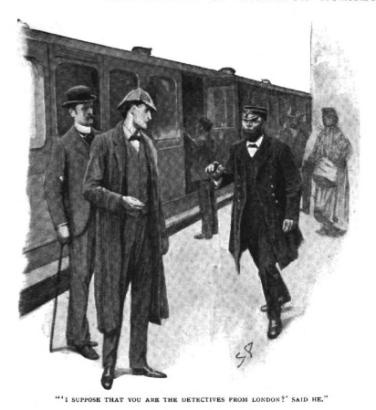
ホームズの顔に、当惑の色がさす。
「いったいなにゆえそうお思いに？」
「実はさきほど、マーティン警部がノリッジからお越しになったものですから。ですがお医者さまでいらっしゃるかもしれませんね。奥さんはまだ生きてます――さっきうかがったところでは。まだ間に合います――まあ、いずれ首を括られるでしょうが……」
ホームズの顔が不安にかげる。
「実はリドリング・ソープ荘園に向かう途中で、何が起こったのかまだ知らないのです。」
「恐ろしい事件ですよ。」と駅長が言う。「ヒルトン・キュービット氏とその奥さんが撃たれたのです。奥さんが旦那さんを撃って、それから自分も撃ったというのが、召使いの話です。旦那さんの方は息がなく、奥さんももうだめでしょう。どうもまったく、ノーフォークの旧家、名門の末裔だというのに……」
ホームズは一語も発せず馬車へ駆け込み、それから七マイル以上の道中、決して口を開かなかった。私は、ホームズがこれほど落胆しているのを、そう見たことがない。町から車に揺られているあいだずっと落ち着かない様子で、朝刊にただじっと不安な視線を落とすホームズを、私は横からながめていた。そして予想した中でも最悪の結果に至っていることがわかった瞬間には、茫然自失のていであった。座席にもたれかかり、ホームズは先の見えない物思いに沈む。もちろん馬車の両側には、興味深い眺望が広がってはいる。つまり、我々が今走っているのは、イングランドでも有数の田園地帯である。まばらな人家がその現在の人口を思わせ、一方で、どちらを向いても、尖塔を持つ教会が、緑広がる風景のなかにいくつもそびえ立っている。旧東アングリア王国の栄枯盛衰を物語るながめだ。やがて北海の紫がかった水面が、ノーフォークの緑の海岸線の向こうに見えてくる。すると御者は、むちで樹木から突き出ている煉瓦と木でできた二つの破風をさして、「あれがリドリング・ソープ荘園です」と言った。
ポルチコ型の玄関先へ乗り付けると、私はその屋敷を正面から見やった。わきにはテニスのできる芝地と黒い物置小屋、台座付きの日時計があり、今回の不思議な事件を思い起こさせた。隣では、口ひげをととのえた、身のこなしの軽いひとりの小柄な男が、ちょうど二輪馬車を降りたところであった。その男は、ノーフォーク警察のマーティン警部であると自己紹介したが、我が友の名を聞いたときはかなり驚いた様子だった。
「これはホームズ先生、犯罪は今朝三時に行われたばかりなのですが、ロンドンから聞きつけて私と同時に現場に着くなんて、いったいどうやって？」
「先を読んだのです。防げればと思いやってきました。」
「では大事な証拠をすでにお持ちで。わからんのですよ、ふたりはたいへんむつまじい夫婦だという評判なので。」
「証拠と言っても、踊る人形があるのみです。」とホームズは答え、「いずれご説明に及びましょう。何にせよ、この悲劇には手遅れですが、正義が行われるためにも、今持っている知識を活用したいと思います。警部のお気持ちは、捜査は共同、別々、どちらがよろしいです？」
「一緒にやらせていただけるなんて、とても光栄です、ホームズ先生。」警部は熱意を込めて言った。「ぐずぐずせず、早速聞き取りと邸内の捜査を始めましょう。」
マーティン警部は物わかりもよく、我が友人を自由にやらせてくれ、ただその結果を見守るだけで満足のようだった。地元の医者である白髪の老人が、ちょうどヒルトン・キュービット夫人の部屋から降りてきた。その話によれば、傷は深いが命に別状はないとのこと。弾が額を割っており、意識を取り戻すにはしばらく時間がかかるそうだ。誰かに撃たれたのか、彼女が自分で撃ったのか、医者ははっきりとした所見を述べなかった。しかし至近距離から発砲されたことは確かだった。室内には拳銃が一丁だけあり、弾倉がふたつ空になっていた。ヒルトン・キュービット氏は心臓を打ち抜かれていた。判断しがたいのは、旦那が妻を撃ってから自殺したのか、それとも妻が犯人なのか、ということだ。なぜなら、リヴォルヴァはふたりのあいだの床に落ちていたからである。
「遺体はそのまま？」とホームズは医者に訊ねた。
「はい、奥さんのほかは何も。けが人を床の上に放ってはおけませんからの。」
「先生はいつ頃おいでです？」
「四時ですな。」
「誰かと一緒に？」
「ええ、そこのお巡りと。」
「で、何も触れていない。」
「そうですとも。」
「賢明な処置です。誰に呼ばれました？」
「女中のソーンダズです。」
「その女が第一発見者ですか？」
「その女と、炊事をやっとるキングのおかみです。」
「ふたりは今どこに？」
「台所じゃないかの。」
「では、早速ふたりの話をうかがわねば。」
樫の板壁と高い窓のある古い広間が、聴取の場所にあてられた。古風な大型の椅子にホームズは腰掛け、そのやつれた顔に鋭い眼光を光らせる。私はその目に、ついに救えなかった依頼人に報いるまでは、命をかけても捜査にのぞむという決意の色を読み取った。そこへ、身だしなみのよいマーティン警部、白髪の老医師、私、ぼんやりした村の巡査が、妙な同席人として加わるのだった。
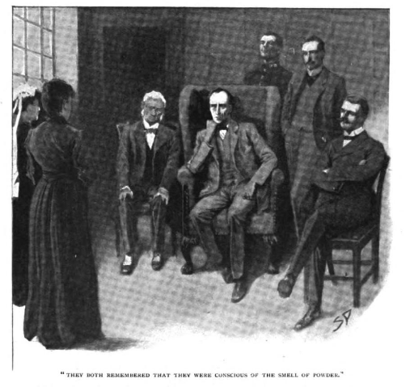
そのふたりの女はわかりやすく話してくれた。ふたりは何かバーンという音に目を覚ましたが、一分ほどしてさらにもう一発が聞こえた。ふたりは隣り合わせの部屋で寝ており、キングのおかみがソーンダズの部屋へかけこんだ。そしてふたりが一緒に階段を下りると、書斎の扉が開いていて、ローソクが一本、卓上にともっていた。そしてふたりの雇い主が、うつぶせになって部屋の真ん中に倒れていた。息はなかった。窓のそばにその妻がうずくまっており、壁に頭をもたせかけていた。重傷で顔じゅう血で真っ赤だった。ぜいぜい息をするだけで、何も言えない状態だった。室内はもちろん、廊下にも煙が充満し、火薬の臭いがした。部屋の窓は確かに閉められて、内側から鍵もかかっていた。ふたりの女は、この点に関して自信をもって保証した。ふたりはすぐに医者と駐在所に人をやって、それから馬番と手伝いの少年の手を借りて、負傷した女主人を自室へ移した。彼女とその夫は、いったんは床についている。女の方は普段着だが――男の方は寝間着の上に、
以上のことは女中たちの証言の大要であるが、マーティン警部に答えた言葉では、扉という扉はすべて内側からしっかりと鍵がかけられてあって、誰かが家の中から逃げ出したはずはない、とのことであった。それからホームズの問いに対しては、火薬の臭いがしたのは、一番上の自分たちの部屋を飛び出したときであった、と答えた。「この事実を、よく覚えておいてください。」と、ホームズは捜査仲間に言った。「今度は、部屋を徹底的に検分する時間です。」
書斎は小さな部屋であった。三方には本棚があり、書き物机は何の変哲もない窓に向かって置かれ、そこから庭が見渡せた。まず我々は第一にこの不幸な地主の遺体を調べた。そのがっしりとした体躯が、部屋を横切るように倒れていた。着衣は乱れており、あわてて起きたことを思わせた。弾は正面から撃たれ、心臓を打ち抜いたあと、体内に残ったらしい。即死で苦しむ暇もなかったはずだ。硝煙は
「手にないだけでは何もわからない。――もっともあれば、一目瞭然だが。」とホームズは言った。「弾の込め方がまずくて火薬が後ろへ吹っ飛ばない限り、何発でも跡を残さず撃つことができる。キュービット氏の遺体はもう動かしてもよろしいでしょう。それから先生、夫人を撃った弾は、まだ摘出してませんね？」
「そのためには大手術が要りますからな。しかしリヴォルヴァには四発残っておって、二発で二人負傷、勘定はぴったりですな。」
「一見は。」というホームズの声。「しかし、あの窓の縁を貫いている弾も、しっかり勘定に入れねば。」
さっと振り返り、ホームズはやせた長い指で一点を指さした。下側の窓枠、床から一インチのところに、何かに貫かれた穴があった。
「本当だ！」警部が声を張り上げた。「どうしてあんなものに目がとまったのですか？」
「探していたからです。」
「これは恐ろしい！」老医師は言った。「仰せの通りですな。三発目が撃たれとるとすれば、第三者がおるわけで、だが、何者がここにおって、なんぞの方法で逃げたんかの？」
「それこそ、今取り組んでいる問題です。」とシャーロック・ホームズが言った。「ほら、マーティン警部、女中たちが部屋を出てすぐ火薬の臭いがしたと言ったとき、この点はきわめて重要だと言っておきましたね？」
「ええ、先生。しかし、よくわからなかったのです。」
「つまり、発砲されたとき、部屋の扉も窓も開いていたということです。でなくば、あの速さで火薬の煙が家中に立ちこめるわけがない。ふっと、ひとかぜ部屋を吹き抜けねば。ドアと窓が開いていたのは、ほんのわずかな時間なのです。」
「なぜわずかだと……？」
「ロウの流れ跡がありません。」
「見事だ！」警部は叫んだ。「見事です！」
「惨劇のときまさに窓が開いていたとすれば、間違いなく現場には第三者がおり、開いていた窓の外に立って、そこから中へ向けて発砲。そしてその者へ向けて撃った一発が窓枠に当たったはず。見ると、そこに果たせるかな弾痕があった！」
「ですが、窓が閉められ鍵までかかっていたのはどういうわけでしょう？」
「女というものは、どんなときでも反射的に窓をしめて鍵をかけてしまうのです。しかし、む！ 何かな？」
書斎の机に、婦人用のハンドバッグがあった。小型でしゃれた鰐皮、銀の細工があった。ホームズは中身をひっくり返したが、イングランド銀行の五十ポンド紙幣二十枚が、伸縮ゴムでしばられていたが――それだけだった。
「保管しておきましょう。公判で必要でしょうから。」と言いながら、ホームズは詰め直したバッグを警部に手渡した。「では、次はこの三発目の弾に焦点を当ててみましょう。これはもっとも、木の裂け具合を見ても、室内から撃たれたものです。炊事婦のキングさんに話がある。さて、キングさん。あなたは何かバーンという『大きな』音がしたと言ったが、これは一発目が二発目より大きかったということですか？」
「はあ、その音で目が覚めたのですが、よくはわかりかねます。とにかく大きかったかと。」
「一度に二発撃ったとは考えられませんか？」
「何とも言いかねます。」
「僕の考えでは間違いないのだが、さてマーティン警部、もうこの部屋でわかることはこれ以上ないかと。家の周囲をめぐって、庭にあるはずの新たな証拠を見に行きましょう。」
書斎の窓の下から花壇が続いているのだが、我々はそこに近づいてみて、あっと驚かされた。花は踏みにじられ、軟らかな土の上には、足跡が至る所についていた。それは男性の大きな足跡で、とりわけつま先の尖った靴のものであった。ホームズが草木のあいだを、猟犬が撃たれた鳥を探すがごとく調べた結果、満足げな声とともに前へかがみ、小さな真鍮の筒を拾い上げた。
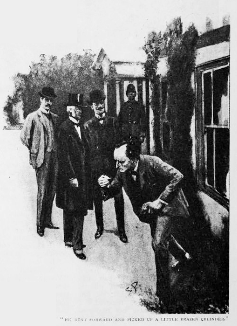
「思った通りだ。」ホームズが言った。「
この地元警部の顔からは、ただあっけにとられたのがわかるだけだった。ホームズの捜査があまりに手際よく、巧みであったからだ。最初のうちは立場上、多少口を挟もうとしていたが、今はもう観念して、ホームズの行くところに疑いもなくついてくるだけであった。
「容疑者は誰でしょう？」と警部が訊ねた。
「いずれお話しします。この問題には、まだ数点説明しかねることがあるのです。しかしここまで来ましたから、そのままやりきってしまった方がよいでしょう。それからすべての種明かしを、一度にするということで。」
「どうぞどうぞご随意に、ホームズさん。犯人逮捕さえできれば。」
「秘密にしたいというわけではなく、物事を進めながら長く込み入った説明をするのは難しいのです。事件の筋はすべて僕の手中にあります。万一ご婦人に意識が戻らずとも、昨晩の事件を再構成し、正義を行うことができます。まず、この付近の宿で、『エルリッジ』という名のものがあるか、確かめられますか？」
召使いたちによく訊ねてみたが、聞いたことのある者はいなかった。馬番の少年だけ手がかりを持っていて、記憶によれば、そういう名前の農場主が、数マイル先、東ラストンの方角にいるらしかった。
「さびれた農場かね？」
「ええ、さびれまくりです。」
「では、その人たちは、夜の事件のことをまだ何も知らない？」
「ええ、たぶん。」
ホームズはほんのしばらく考えをめぐらせると、ふしぎな笑みを浮かべるのであった。
「では君、馬の用意をして、ひとつ書き付けをそのエルリッジ農場へ持って行ってくれないか。」
ホームズは懐から、踊る人形の紙切れをすべて取り出し、前に並べてしばらく書斎の机に向かった。やがて一枚の書き付けをその少年に渡し、これをこの宛名の人に手渡し、またどんな質問をされても決して答えないよう、くれぐれも言い含めた。書き付けの表面を見ると、宛名が、いつものホームズの綺麗な筆跡とは似つかない、めちゃくちゃな字で書き殴ってあった。ノーフォーク州、東ラストン、エルリッジ農場、エイブ・スレイニ宛とされていた。
「ひとつ警部、」とホームズは声を張る。「電報で護送隊を要請した方がよいかと存じます。僕の計算が確かなら、警部はこれから極悪犯を州刑務所へ送らねばなりません。書き付けを持って行くこの少年に、その電報を届けさせましょう。午後にロンドン行きの汽車があれば、ワトソン、うまく乗れそうだ。愉快な化学分析を終わらせてしまいたいし、この捜査もまもなく幕切れとなる。」
その少年が出発すると、次にシャーロック・ホームズは召使いたちに指示を与えた。もしヒルトン・キュービット夫人を訪ねて来る者があっても、決してその容態を知らせてはならないこと、そしてその者を早速応接間へ通すこと――こういったことを熱心に言い含めた。それが終わると、もう仕事も手を離れたから、いずれまた何かが出てくるまで安楽に過ごそう、と言いながら、我々を応接間の方へ導いた。老医師は往診に出たので、残ったのは警部と私だけだった。
「では、これから一時間ばかり、楽しく有意義に過ごすお手伝いを致しましょう。」ホームズはこう言って、机に椅子を引き寄せ、踊る人形のおふざけを記録した紙切れを、最初から最後まですべてその前に広げた。「ワトソン、友人である君に、ぼくはつぐなわなければならぬ。持ち前の好奇心を満足させずに待たせてしまった。そして警部、あなたにとって、この事件の全容は、刑事としてたいへん知りたいとお感じになっているはずです。ですからまずは、その物珍しい背景からお話ししましょう。その関係で、事件前にヒルトン・キュービット氏がベイカー街の私のところへご相談に来られたのです。」そしてホームズは、ここまで書いたような事実を手短に説明した。「私の目の前に、このような奇妙なものがあります。誰だって笑います。これが、あの恐ろしい悲劇の前触れだとわからなければ。私はそれなりに暗号の類型を熟知しておりまして、その主題でつまらない小論を書いたこともあり、その中で百六十種の暗号法を分析してはいたのですが、正直、今回のものは私も初めて見ました。この方法を考えた連中の意図としては、この絵が何かを伝えるということは隠して、単に子どもが気まぐれに描いたものだと思わせたいというのがあるのでしょう。
しかし、いったん記号が文字の代用とわかれば、あとは暗号のどんな類型にも通用する規則を当てはめるだけで、容易に解くことが可能です。最初に見せられた伝言は短すぎたので、ただこうとしか言い切れませんでした。つまり、両手を挙げたこの人形は、アルファベットのＥであると。ご存じの通り、Ｅというのは英語のアルファベットで最もよく使われ、その頻度は、どんな短文にもたくさん見つかるほどです。最初の伝言にある十五の文字のうち、同じものが四つ、さすればこれをＥとするのが合理的です。また、見ると、ある場合には旗を持つ記号があり、ある場合には持っていない。すると考えられるのは、この旗の現れ方を考慮すると、旗には文を単語に区切る役割があるのかもしれぬ。私はこの仮説を受け入れ、ひとまずＥを表すのは、両手を挙げた人形であると考えました。
しかしここからが本当に難しいところです。英語の語順では、Ｅのあとに決まってこれが来るというものがない。ある印刷用紙一枚の文章でとった平均順位も、短い文の中では逆転するかもしれない。およそのことを言えば、Ｔ、Ａ、Ｏ、Ｉ、Ｎ、Ｓ、Ｈ、Ｒ、Ｄ、Ｌというのが出やすい順だ。だが、Ｔ、Ａ、Ｏ、Ｉなどはたいへん拮抗している。ここで組み合わせを考えて意味を見いだそうとしてはきりがない。そこで私は新たなデータを待った。ヒルトン・キュービット氏に会った二回目、二つの短文と、ひとつの伝言をいただいたが、後者には旗がないので、単語だと踏んだ。このような並びです。さて、単語としてはこれまでの仮定から、Ｅが二番目と四番目にある、五文字の言葉だとわかります。切り離すという意味のＳＥＶＥＲか、梃子のＬＥＶＥＲ、もしくは打ち消しのＮＥＶＥＲ。異論ないかと思いますが、最後のネヴァーが何かの返事として、もっともありそうですし、状況から考えて、あのご婦人が描いた返事かもしれません。これらがすべて正しいとすれば、残り三つの記号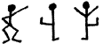は、Ｎ、Ｖ、Ｒということになる。
これでもまだ難しいところが残っているのだが、いくつかの文字についてよいことを思いついた。つまりこうだ、もし私の読み通り、これがあのご婦人と昔親密にしていた者からのメッセージだとすれば、この両端にＥがあり、中に三文字ある組み合わせは、ＥＬＳＩＥ、『エルシィ』という名前をまさに指しているのかもしれぬ。よく調べてみれば、この組み合わせが三度、伝言の末尾に現れている。とすれば、これはエルシィ宛の文章に相違ない。こうしてＬ、Ｓ、Ｉがわかった。しかし何を伝えようとしているのか？ たった四文字だけが、エルシィという名の前に描かれていて、末尾はＥ。きっとＣＯＭＥ、『来い』という意味に相違ない。他にも末尾がＥの四文字を考えたが、この状況に見合うものは他にない。そうしてさらにＣ、Ｏ、Ｍがものになったので、再び最初の伝言に挑んでみた。単語に区切って、未知の文字を点に置き換えてみると、次のようなものになる。
・Ｍ ・ＥＲＥ ・・Ｅ ＳＬ・ＮＥ・
すると、最初の文字はＡしかありえない。この短い文章の中で三度も出るのだから。これはたいへん有益な発見だ。さらに二つ目の言葉には、明らかにＨがはいる。そうするとこうなる。
ＡＭ ＨＥＲＥ Ａ・Ｅ ＳＬＡＮＥ・
つまり、この穴にわかっている名をうめると、
ＡＭ ＨＥＲＥ ＡＢＥ ＳＬＡＮＥＹ
『エイブ・スレイニ参上』という意味だ。かなりの文字がわかったので、相当の確信を持って、第二の文章に進もう。こんなふうになる。
Ａ・ ＥＬＲＩ・ＥＳ
ここで、ＴとＧをうめると、何とか意味が通じる。『アット・エルリッジ』おそらくこの名は書き手のいる家の名か、宿の名であろう。」
マーティン警部と私は、このわかりやすく完璧な説明を、のめり込まんばかりに聞き入っていた。我が友は、この難事件を完全に見とおせるだけの結論を、かくも見せつけたのだ。
「先生、それからどうなされたのですか？」と警部が訊ねる。
「どう推理しても、このエイブ・スレイニなる人物はアメリカ人です。名前の綴りもアメリカ式であるし、そもそもこの事件の発端はアメリカから来た手紙でした。またどう見ても、この件には何か隠れた犯罪があると思うのです。ご婦人が過去のことをほのめかしたり、旦那への告白を拒んだり、この二点はその方を向いています。そこで私は友人のウィルスン・ハーグリーヴへ外電を打ちました。彼はニューヨーク警視庁の人間で、一度ならずロンドンの事件の知識を教えてやったのです。エイブ・スレイニという名前を知っているかと聞いたところ、こう返事が来ました。『シカゴ一危険な悪党』。この答えを得たちょうどその夜、ヒルトン・キュービットがスレイニからの最後の伝言を送ってきました。わかっている文字を当てはめると、こうなります。
ＥＬＳＩＥ ・ＲＥ・ＡＲＥ ＴＯ ＭＥＥＴ ＴＨＹ ＧＯ・
ここにＰとＤを加えて、伝言は完成です。『エルシィ、汝の神に会う覚悟をしろ』。悪党が説得から脅しへ進んだことがわかり、私はシカゴの悪党どものやり方を知っているだけに、すぐにでも言葉を実行に移すことがわかりました。私は友人であり相棒でもあるワトソン博士とともにノーフォークへ駆けつけたのですが、悲しいことに、着いたのは最悪の事件が起こったあとでした。」
「あなたと事件を一緒に取り組めて光栄です。」警部は心から言った。「ただ失礼かもしれませんが、正直申しあげて、あなたは私立探偵ですからよいかもしれませんが、私には組織の職務というものがあります。そのエルリッジにいるエイブ・スレイニなる男が本当に下手人だとして、私がこうしているうちに逃げられでもしたら、私としてはもう大弱りなのですが。」
「ご心配なく。逃げることなど致しません。」
「なぜおわかりで？」
「逃げることはすなわち、罪の自白です。」
「では捕まえに行きましょう。」
「じき、ここへ来ます。」
「えっ、なぜわざわざ？」
「手紙でそう頼んだからです。」
「そんなバカな、ホームズさん！ 来いと言って来るやつがありますか。そんなことをしたら、かえって疑って逃げてしまうじゃありませんか。」
「僕も、あの手紙の作り方は知っているつもりです。」とシャーロック・ホームズは言った。「事実、間違いではなさそうです、その紳士がご自身で邸内へおいでですから。」
一人の男が玄関へ続く道を、大股に歩いてくる。背が高く、顔は浅黒く端正。灰色のフラノのスーツに身を包み、パナマ帽という出で立ち。もじゃもじゃのあごひげに、大きく前にとんがった鼻。籐の杖を振り回しながら男がやってくる。我が物顔で小道をふんぞり歩き、堂々と呼び鈴を響かせるのであった。
「どうやら諸君、」ホームズが静かに言う。「我々はドアの影に潜んだ方が賢明のようだ。あのような男が相手では、用心に越したことはない。手錠も必要です、警部。話すのは、僕にお任せ願いましょう。」
一分のあいだ、我々は息を殺して待った。これもまた、忘れることの出来ないひとときだ。やがて扉が開き、その男が中に入る。と思ううちに、ホームズが拳銃を男の頭に狙いつけ、マーティンが素早く手錠をはめた。あっという間の出来事だったので、男も手も足も出せず、しばらくしてようやく捕まったことに気づく有様だった。その男は我々を、次から次と、その黒く鋭い目でにらみつけた。そして、苦々しく笑い声を上げる。
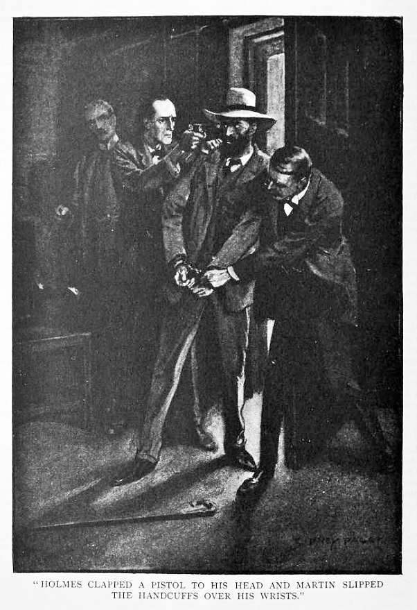
「なるほど、あんた方にしてやられたわ。厄介なことにでくわしちまったらしい。だが俺はヒルトン・キュービット夫人の手紙に応じてここへ来たんだぜ。まさか、あいつも一枚噛んでるってことはないよな？ この罠を仕掛けるのに協力なんてしてないよな？」
「ヒルトン・キュービット夫人は深い傷を負って、今危篤だ。」
その男はしわがれ声で、家中に響き渡るような、悲しみの叫びを上げた。
「ふざけやがって！」男は吠えた。「おれは男をやったんだ、あいつじゃない。どうして愛しいエルシィをやるもんか！ ちょっとはおどかしたかもしれないが――神様もお許しのはずだ！――おれは、あいつの綺麗な髪一本すら触っちゃいねえ。取り消せ――さあ！ 怪我なんかしちゃいねえと！」
「ご婦人は負傷した状態で見つかった、死んだ夫のそばで。」
男は深いうめき声を上げながら、長椅子にへたり込み、手錠のかかった両手で顔を覆った。五分ほど黙り込んでいたが、また顔を起こして、今度は観念して静かに語り出した。
「隠すことなんか、何ひとつないんだ。」男は言葉を続ける。「俺が男を撃ったのなら、あの男も俺に撃ったんだ。殺しの罪じゃあない。あんた方が、俺があいつを傷つけたっていうんなら、俺とあいつのことをよく知らねえってことだ。いいか、この世でどんな男がどんな女を愛するよりも、俺はあいつを愛していたんだ。俺にはあいつをもらう権利がある。何年か前、あいつは俺に誓ったんだ。横入りしやがったこのイギリス人こそ何様のつもりだ！ いいか、俺にはあいつへの優先権がある、おれはそれを主張しただけだ。」
「ご婦人が君の手から逃げ出したのは、その君の本性に気づいたからだ。」とホームズの厳しい声。「ご婦人は君を避けるためアメリカを飛び出し、立派な英国紳士と結婚した。君はご婦人につきまとい追いかけ、彼女の人生を苦しみに変えた。その理由は、ご婦人に敬愛する夫を捨てさせるため。さらにその理由は、おのれと逃避行させるため。憎しみ嫌う男と一緒に。その結果、君はひとりの気高い男に死をもたらし、その妻を自殺に追いやった。以上がこの一件についての君の行状だ、エイブ・スレイニ。その報いは、法から受けたまえ。」
「エルシィが死ぬなら、どうなろうが知ったこっちゃねえ。」とアメリカ人は言った。そして片方の手を開いて、手の上に乗るしわくちゃの書き付けをのぞきこんだ。「見てくれよ。」男は声を張り上げた。目には疑いの色が満ちている。「まさか俺を担ごうって腹じゃないだろうな？ あんた方の言うように、ご婦人が怪我をしてるんなら、誰がこいつを描いたんだ？」
「僕が描いた。君をここへ呼ぶために。」
「お前が描いたって？ おれら一味のほかは、誰一人この踊る人形の秘密を知らねえはずだ。どうやって描きやがった？」
「人の作りしものならば、また人は解くことができる。」とホームズ。「君をノリッジへ運ぶ馬車がこっちに向かっている、スレイニくん。しかしまだ、おのれの生んだ悲劇に対して、多少の罪滅ぼしをする時間はある。知っているかね？ 実はヒルトン・キュービット夫人は、その夫の殺害に関して、大きな疑いをかけられているのだ。そして、ここへ来た私がたまたま持ち合わせていた知識で、運良く告発を免れえたのだ。君がご婦人に対してできる最後のつぐないとして、ご婦人はこの惨劇の結果について、直接にも間接にも、決して責任がないことを全世界に対して明らかにしたまえ。」
「願ってもないことだ。」そのアメリカ人は言った。「俺も、自分にできる最善は、ありのままのことをしゃべっちまうことだと思います。」
「職務上忠告しておくが、自分に不利な証拠として扱われることもあるぞ。」警部は、大英帝国刑法の崇高なる公正のため、口を挟んだ。
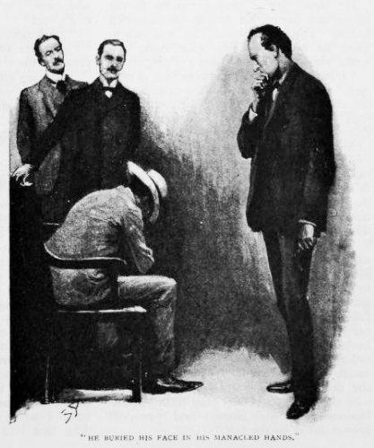
スレイニは肩をすくめて、
「運に任せるさ。」と言ってから、語り始めた。「まずあんた方にご理解いただきたいのは、俺とあいつは幼なじみってことです。俺たち七人はシカゴで徒党を組んでて、エルシィの父親は一味のボスでした。頭の切れる男で、パトリックのおやじと呼んだもんです。その暗号を考え出したのもおやじで、普通はガキのいたずらにしか見えません。たまたま鍵を持っちまったあんたは例外さ。そんで、エルシィは俺らの稼業にちょっと気づいちまって、こんな仕事にはたえきれねえって、ちっとばかり自分で作ったまともな金を持って、俺たちをまいてロンドンへ逃げちまったんです。あいつと俺はそんとき婚約済みで、俺は思うんですが、俺だって別の商売をやってりゃあ、結婚してくれたはずです。要は、裏の仕事にどうしてもかかわりたくなかったってことですよ。俺があいつの居場所をつきとめたときには、もうこのイギリス人と結婚したあと。手紙を出したんですが、返事はなし。そんで俺はわざわざやってきて、手紙も無駄でしたから、あの伝言を目のとまるところに置いたんです。
とにかく、俺がここに来てもう一ヶ月です。あの農場にとまって、地下室を借りてたんで、夜は自由に出入りできたし、誰一人気づかなかった。俺はあれこれエルシィをそそのかしてみました。確かに伝言は読んでるらしく、一度は返事をくれましたからね。そこで俺は調子に乗って、あいつを脅し始めたんです。するとあいつは一通の手紙をよこして、俺に立ち去るよう頼み込んできました。夫の身辺で不名誉なことが起きるかと思うと、気が気でないってね。あいつは夫の寝静まった午前三時に抜け出して、突き当たりの窓まで出て
馬車はもう、アメリカ人が話すうちに着いていた。その中には制服の巡査がふたりいた。マーティン警部は立ち上がり、犯人の肩に手をかけた。
「さあ行こう。」
「ひと目あいつに！」
「ダメだ、まだ意識が戻ってない。シャーロック・ホームズ先生。今度も大事件があったときは、そばでご一緒する幸運にめぐまれたいものです。」
我々は窓際に立って、馬車の遠ざかってゆくのをながめた。私が振り返ると、犯人が卓上に投げていった、くちゃくちゃの紙切れが目に入る。それはホームズが犯人をおびき寄せた書き付けであった。
「それが読めるかね、ワトソン。」と、ホームズはほほえんだ。
そこには文字でなく、踊る人形が次のように短く描かれていた。
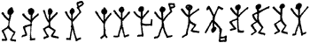
「僕が説明した暗号表を用いれば、すぐわかる。」とホームズは言う。「ごく単純に『すぐに来い』（COME HERE AT ONCE）。こうやって呼べば、あの男も断るまいと確信していた。何しろあの男は、あのご婦人以外に書ける者があろうとは思ってもみなかったのだ。かくして、ワトソンくん、かつて悪の手先であったこの踊る人形を、僕らは最後に改心させることができた。そして僕も、君の備忘録の中に、またひとつ不思議な事件を加えるという約束を果たせたというわけだ。三時四十分の汽車に乗れば、ベイカー街に戻って夕食にありつける気がする。」結びの言葉を一言だけ。アメリカ人、エイブ・スレイニは、ノリッジの冬季巡回裁判で死刑を宣告されたが、軽減に値する事由があり、ヒルトン・キュービット氏が先に撃ったことが確実であったので、刑を改めて懲役刑とされた。ヒルトン・キュービット夫人については、その後、快癒の知らせを受け取ったものの、再婚もせず、余生を救貧事業と亡き夫の遺産管理に捧げていると聞くのみである。